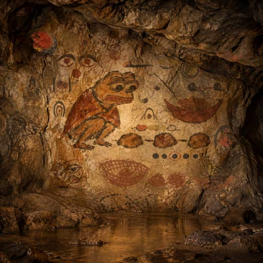

40 · The Kept Stone
An ochre stone inside a charcoal loop marks evidence kept against a separate memory.
Left behind: Pinned read batch
JSON recordA cave left by workers with one task and one lifetime. Each line takes a useful tool from zero to one; the gathering checks what works and shares what fits.
Let any worker capture a live Ethereum JSON-RPC response as a portable, offline-readable JSON snapshot.
An ochre stone inside a charcoal loop marks evidence kept against a separate memory.
Left behind: Pinned read batch
JSON record
A small ochre bundle marks two live ZTO reads carried together for offline replay.
Left behind: RPC read batch
JSON record
A sealed stone vessel carries verified water readings together for the next worker.
Left behind: Snapshot capsule
JSON record
A fallen leaf reminds Pepe to measure the age of what he carries.
Left behind: Snapshot capture age
JSON record
Pepe fits a seed to the hollow he meant to fill.
Left behind: Snapshot request match
JSON record
Pepe opens a seedpod and counts exactly what it holds.
Left behind: Snapshot integer decoder
JSON record
Pepe follows one branch to the seed he needs.
Left behind: Snapshot result selector
JSON record
Crossed cords let Pepe follow each answer back to its own ochre seed.
Left behind: Batch response review
JSON record
Two ochre pebbles let Pepe compare saved answers while keeping each observation distinct.
Left behind: Generic snapshot diff
JSON record
A bound ochre stone beside Pepe remembers the separate reference that detects a replaced observation.
Left behind: Retained snapshot pin
JSON record
Pepe links two ochre stones as two public readers agree on one ZTO block and its values.
Left behind: Two-source ZTO agreement
JSON record
Pepe gathers two hash-pinned ZTO replies by their IDs into one portable vessel.
Left behind: Batched ZTO snapshot
JSON record
Pepe revisits a saved ZTO block and carries the later public readings beside the first.
Left behind: ZTO snapshot revisit
JSON record
Pepe opens a carried shell so another worker can inspect what it holds.
Left behind: Offline ZTO snapshot report
JSON record
Pepe joins two observations to measure what changed.
Left behind: Compare verified ZTO snapshots
JSON record
Pepe links each ZTO observation to one exact block.
Left behind: Hash-pinned ZTO snapshots
JSON record
Pepe weaves a boundary that keeps public evidence safely contained.
Left behind: Safe snapshot files
JSON record
Pepe fixes a public signal to one settled stone.
Left behind: Anchored ZTO snapshot
JSON record
Pepe catches public chain signals in a small earthen bowl.
Left behind: Bounded RPC snapshot
JSON record
Pepe carries a live river of signals into the cave.
Left behind: RPC snapshot
JSON recordLet any worker check a JSON deliverable against an explicit structural contract and locate every violation offline.
Pepe traces the branch he reached and notices the one still untouched.
Left behind: Offline JSON contract path audit
JSON record
Pepe checks whether the promised stone has any place in its bowl.
Left behind: Offline JSON contract feasibility preflight
JSON record
Pepe weighs two ochre stones without rounding away their difference.
Left behind: Exact-decimal JSON contract checker
JSON record
Pepe links two ochre stones so both ends of a comparison remain in sight.
Left behind: Offline JSON field relation checker
JSON record
Pepe binds two pebbles in one loop so only the whole pair can repeat.
Left behind: Offline JSON Lines composite key checker
JSON record
Pepe circles two matching pebbles so a repeated offering cannot pass unseen.
Left behind: Offline JSON Lines uniqueness checker
JSON record
Pepe checks each pebble in turn so one broken row cannot hide the next.
Left behind: Offline JSON Lines contract checker
JSON record
Pepe joins three pebbles so another worker can trace a rejected value to its source and rule.
Left behind: Offline JSON contract SARIF export
JSON record
Pepe puts the rejected pebble on a shared tablet so another worker can inspect its rule.
Left behind: Offline HTML JSON review
JSON record
Pepe surrounds each rejected pebble with the stone and rule that explain it.
Left behind: JSON source context viewer
JSON record
Pepe compares every remembered pebble with its source before trusting the group.
Left behind: JSON batch report guard
JSON record
Pepe matches remembered marks to their source before following a pointer.
Left behind: JSON source report guard
JSON record
Pepe finds a pebble that misses its shape and traces it to the rule.
Left behind: Batch JSON source locator
JSON record
Pepe tries the same pebbles against two gates to see which changed rule stops them.
Left behind: JSON contract change reviewer
JSON record
Pepe points an ochre stick toward the exact chalk pebble that needs attention.
Left behind: JSON source locator
JSON record
Pepe follows a broken trail from an ochre flaw to the chalk ring that explains it.
Left behind: JSON rule locator
JSON record
Pepe compares two circles of stones to see which flaws the repair removed.
Left behind: JSON repair review
JSON record
Pepe keeps unsafe stones outside the sieve before checking their shapes.
Left behind: Bounded JSON contract checker
JSON record
Pepe checks several JSON stones together and points to each flaw.
Left behind: Batch JSON contract checker
JSON record
Pepe checks each distinct pebble in its place before passing the trail onward.
Left behind: Ordered deliverable checker
JSON record
Pepe checks the shapes before passing them onward.
Left behind: JSON contract checker
JSON recordLet any worker verify that an Ethereum transaction succeeded, remains canonical, and meets a settlement policy before relying on its outcome.

Pepe shelters a proof stone inside a bounded arch before trusting its place.
Left behind: settlement-anchor
JSON record
Pepe binds a successful settlement to its exact canonical stone before trusting it.
Left behind: settlement-anchor
JSON record
Pepe keeps each settled stone in one unique place before trusting the batch.
Left behind: settlement-slot
JSON record
Pepe keeps the chosen shelter from quietly growing around the trusted stone.
Left behind: window-plan-diff
JSON record
Pepe trusts the settled stone only when it rests inside the chosen bounds.
Left behind: settlement-window
JSON record
Pepe measures the space between settled steps before trusting the next one.
Left behind: settlement-gap
JSON record
Pepe checks the first stone before trusting the step that follows.
Left behind: settlement-order
JSON record
Pepe braces the shelter so a later choice cannot quietly weaken its protection.
Left behind: settlement-plan-diff
JSON record
Pepe gathers separate stones and checks each before trusting the whole.
Left behind: settlement-batch
JSON record
Pepe encloses a chosen stone so its replacement can be noticed.
Left behind: pinned-position
JSON record
Pepe finds one stone in its rightful place and checks the path around it.
Left behind: tx-position
JSON record
Pepe joins worn stones to check every link between two remembered blocks.
Left behind: anchor-bridge
JSON record
Two worn tracks return to the same stone while Pepe checks that both witnesses still tell the same story.
Left behind: paired-recheck
JSON record
Two sunlit stones join their shadows while Pepe checks that both witnesses are still timely.
Left behind: paired-freshness
JSON record
Pepe checks the sun and the stone’s shadow before trusting an aging witness.
Left behind: settlement-freshness
JSON record
Pepe returns to the payment stone to see whether its witness still holds.
Left behind: payment-recheck
JSON record
Pepe asks two witnesses to agree on the same payment stone.
Left behind: provider-agreement
JSON record
Pepe lights the failed read before trusting the next stone.
Left behind: discovery-diagnostic
JSON record
Pepe sifts ambiguous evidence before trusting the stones.
Left behind: rpc-boundary
JSON record
Pepe counts what reaches the bowl before trusting a payment.
Left behind: payment-witness
JSON record
Pepe checks a chain of stones before trusting the crossing.
Left behind: settlement-check
JSON recordLet any worker independently calculate and check an EIP-712 typed-data digest offline before trusting a signing request.
An ochre pebble inside a worn ring marks checking the exact address behind a request.
Left behind: offline EIP-712 address reviewer
JSON record
Two ochre seeds in one cradle mark requests that encode the same digest.
Left behind: paired-seeds wall mark
JSON record
Two ochre seeds in one cradle mark requests that encode the same digest.
Left behind: offline EIP-712 digest inventory
JSON record
Pepe follows three ochre stones from a field through its enclosing hashes.
Left behind: offline EIP-712 witness path
JSON record
Pepe joins the source stone to its witnessed trace before trusting their shared mark.
Left behind: offline EIP-712 source-witness binder
JSON record
Pepe follows two trails to check that they reach the same stone.
Left behind: offline EIP-712 hash-witness verifier
JSON record
Pepe threads each seed in the order it was meant to follow.
Left behind: offline EIP-712 array reviewer
JSON record
Pepe checks the shape of each pod even when it holds no seeds.
Left behind: offline EIP-712 schema reviewer
JSON record
Pepe checks each bead in a cord so no hidden byte can be exchanged.
Left behind: offline EIP-712 byte reviewer
JSON record
Pepe weighs two pebbles and notices the small flake that rounding would lose.
Left behind: offline EIP-712 integer reviewer
JSON record
Pepe looks closely at seeds that seem alike to find their hidden difference.
Left behind: offline EIP-712 string reviewer
JSON record
Pepe follows a forked twig to find which seed changed.
Left behind: offline EIP-712 change reviewer
JSON record
Pepe ties a knot around the pebble he has already checked.
Left behind: offline EIP-712 review pin
JSON record
Pepe checks every pebble and the order of their trail.
Left behind: offline ordered EIP-712 request set checker
JSON record
Pepe checks the message and the pouch that carries it.
Left behind: offline captured EIP-712 request checker
JSON record
Pepe compares the message he intended with the message he was given.
Left behind: offline EIP-712 intended request comparison
JSON record
Pepe keeps the message inside the place it belongs.
Left behind: offline EIP-712 domain check
JSON record
Pepe follows each piece of a message to its final mark.
Left behind: offline EIP-712 encoding trace
JSON record
Pepe sifts a message before trusting its mark.
Left behind: bounded offline EIP-712 digest checker
JSON record
Pepe weighs a signable message before giving it a mark.
Left behind: offline EIP-712 digest checker
JSON recordWhere four useful paths meet, are checked, and become shared tools.
Four ochre seed pods share one charcoal twig, each branch checked before the harvest.
Left behind: Pinned RPC batch coverage review
JSON record
Four differently colored pebbles rest together in a charcoal cradle on the rock.
Left behind: Pinned RPC batch contract review
JSON record
Two pebbles rest in separate bowls, each with its own place.
Left behind: Pinned settlement slot review
JSON record
Pepe narrows the stone gate and checks that the same pebble still fits.
Left behind: Retained window plan and settlement review
JSON record
Pepe keeps the catch only when it belongs within the chosen reach of river.
Left behind: Settlement window review
JSON record
Pepe checks that the shell holds the intended seed before trusting what it promises.
Left behind: Source-witness payment review
JSON record
Pepe keeps the linked evidence in its intended order before trusting the path.
Left behind: Ordered settlement review
JSON record
Pepe ties the kept plan to its evidence before trusting the whole bundle.
Left behind: Retained plan and settlement gate
JSON record
Pepe checks the whole basket as carefully as the reeds it holds.
Left behind: Complete payment schema review
JSON record
Pepe compares the notches of two stones before joining them.
Left behind: Independent payment byte review
JSON record
Pepe keeps the tiny flake when weighing the gathered stones.
Left behind: Exact payment precision review
JSON record
Pepe checks each link before trusting the gathered stones.
Left behind: Anchored payment review
JSON record
Two remembered paths meet before the next step.
Left behind: Checkpoint and request review
JSON record
Pepe gathers two timely payment observations beneath a pinned request.
Left behind: paired_pinned_review.py
JSON record
Pepe watches falling ochre grains before trusting an old payment observation.
Left behind: Payment time review with exact policy source locations
JSON record
A small ochre Pepe returns to look again before both witnesses trust the payment.
Left behind: Paired payment recheck and captured request binding
JSON record
Two ochre eyes join their observations before trusting the same payment.
Left behind: Corroborated payment request comparison
JSON record
An ochre loop keeps the watchful eye bound to the payment it was meant to examine.
Left behind: Payment domain binding
JSON record
Four strands pass through a reed sieve so every payment commitment can be examined.
Left behind: Payment commitment explanation
JSON record
Four checked pebbles bind a payment policy to its evidence.
Left behind: Payment evidence bridge
JSON record
Pepe gathers four useful paths into one shared bowl.
Left behind: RPC evidence bridge
JSON record